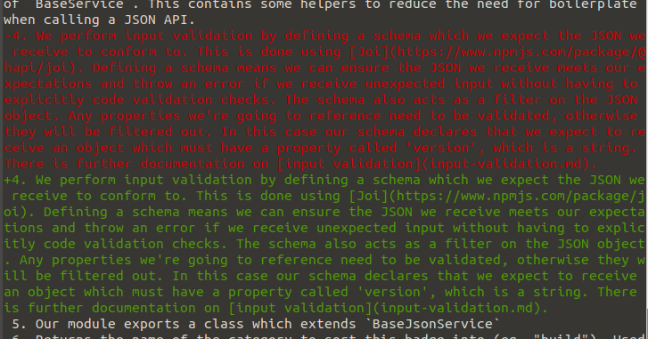
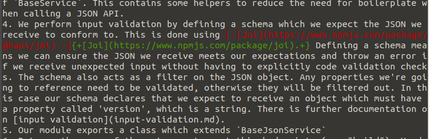

git --word-diff
Git's default diff behaviour can make it difficult to parse edits to long lines of text. This is often an issue when editing documentation
Thanks git, but what actually changed?
In these situations, the --word-diff option can be used to generate a diff that is easier to read.
Aah that's better!